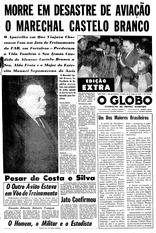
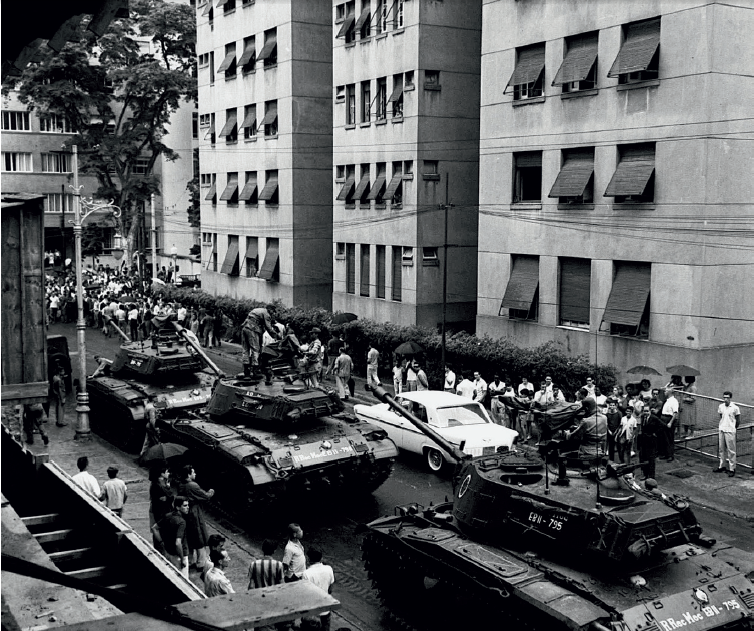
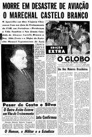
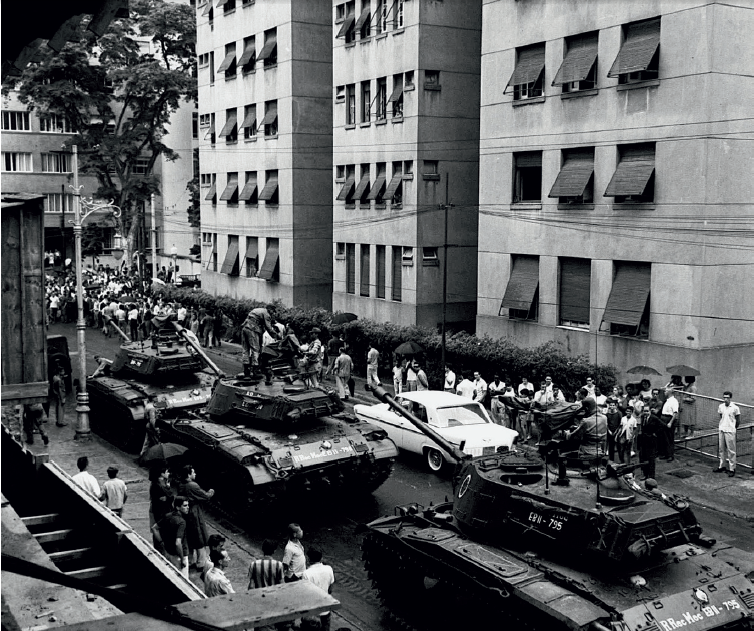

Bipartidarismo
O bipartidarismo foi um dos fatores mais característicos da ditadura militar. Aprovado em novembro
de 1965, o Ato Complementar Número 4 instaurou o bipartidarismo no país, entre o MDB (Movimento
Democrático Brasileiro) e o ARENA (Aliança Renovadora Nacional).
No MDB haviam vários membros do PCB abrigados que não aceitavam a luta armada como alternativa de
oposição ao regime militar. Estes se entituçaram de "Resistência Democrática". Visto o crescimento
da esquerda e a influência das propagandas pelos movimentos chamados de subversivos, observando a
população mais humilde iniciava um movimento em direção9 à esquerda, a elite brasileira, e a classe
média começaram a temer o rápido avanço do chamado, pelos anticomunistas, de "perigo vermelho" ou
"perigo comunista". Segundo relatos publicados pelo Departamento de Documentação Histórica da
Fundação Getúlio Vargas: "Os militares envolvidos no golpe de 1964 justificaram sua ação afirmando
que o objetivo era restaurar a disciplina e a hierarquia nas Forças Armadas e deter a
"ameaça comunista" que, segundo eles, pairava sobre o Brasil."
No dia 17 de julho, o Congresso havia aprovado a prorrogação de seu mandato até 15 de Março de 1967,
sob a justificativa de que a reforma política e econoômica planejada pelo governo militar poderia
não ser concluída até 31 de Janeiro de 1966, quando terminaria o mandato presidencial inaugurado em
1961.
Primeiros Atos Institucionais
Nas eleições realizadas em 1965, o presidente Castelo Branco editou, no dia 27 de outubro de 1965,
o Ato Institucional n°2 (AI 2), que, dentre outras medidas, extinguia os partidos políticos,
estabelecia eleições indiretas para a presidência da República, facilitava a intervenção federal
nos políticos.
No âmbito social e econômico, algumas instituições, leis e projetos desse governo, ainda em ativa
hoje, são: Estatuto da Terra (1964), Banco Central do Brasil (1964), Código Eleitoral Brasileiro
(1965), Código Tributário Nacional (1966), Banco da Amazônia (1966), FGTS (1966), SUDAM (1966),
Código de Mineração (1967) e Zona Franca de Manaus (1967).
A posse de Castelo Branco ocorreu em 15 de abril de 1964, tendo permanecido na presidência até
março de 1967. Castelo Branco morreu, pouco depois de deixar seu cargo, em um acidente aéreo no qual um caça
T - 33 da FAB (Força Aérea Brasileira) atingiu a cauda do Piper Aztec PA 23, no qual Castelo
Branco viajava. Houve apenas um sobrevivente, e as Forças Armadas nunca deram uma explicação
detalhada sobre o caso.
 


